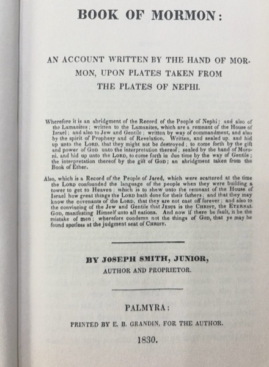
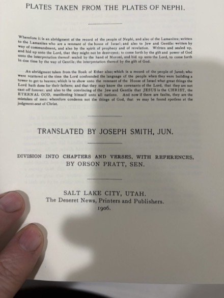
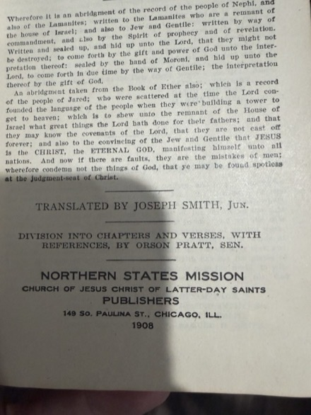
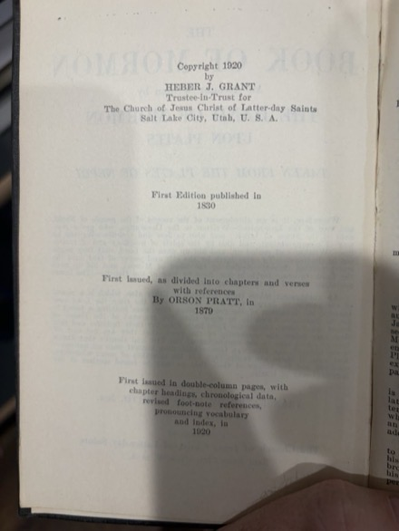

Standard Works·מהדורה בין־שורתית·Interlinear Edition
Every word of the Old and New Testaments, the Book of Mormon, the Doctrine and Covenants, the Pearl of Great Price and the Joseph Smith Translation, in Hebrew — each with its transliteration and its English gloss beneath it.
The Book of Mormon is rendered in pre-exilic Classical Biblical Hebrew, the Mikraic register of Isaiah and Jeremiah.
605,824 words of Hebrew·1,705 chapters·six volumes
The interlinear is always being updated for corrections
For ten years I looked for the Standard Works in Hebrew and it did not exist.
I had studied Classical Biblical Hebrew. I had shelves full of Tanakh, Talmud, Zohar, grammars, lexicons. I had read the Book of Mormon in English, in Spanish, in Samoan — over and over, my whole life. And the one thing I wanted to do with it, I could not: I wanted to read it in Hebrew.
Not modern Hebrew. The Hebrew of the prophets. The Hebrew Nephi tells us his father spoke — the language of Jerusalem before the exile, the living tongue of the First Temple. I wanted to open a book and see וַיְהִי on the page where “and it came to pass” had always been. I wanted to hear בְּרִית where the English said “covenant,” and know I was hearing the same word Abram heard at the ceremony of the pieces. I wanted the Book of Mormon to sound like what it claims to be.
Nobody had made that book. So I made it.
And it could not stop there. Reading the Book of Mormon in Hebrew means reading it against the Tanakh — the same covenant words, the same cadences — so the Tanakh had to be here too, and the New Testament with it. The Doctrine and Covenants and the Pearl of Great Price nobody had put into Biblical Hebrew at all, so I translated those as well. What began as one book is six, gathered into one place, every word carrying its gloss beneath it.
I did not set out to produce an academic work. I set out to fill a gap on my own shelf. The deeper I went into the Hebrew the more these books opened up — not as texts that need defending, but as texts that defend themselves. The Hebraisms are not decorative. They are structural. The covenant language is not borrowed. It is native.
I speak English, Samoan and Spanish, and I have studied these books in all three my whole life. It was Hebrew that brought me closest to what they were trying to say. I hope it does the same for you.
May it bring you nearer to the God of Israel, who engraved His people on the palms of His hands and does not forget.
— Chris Lambe
If you spot a gloss that could be clearer, or a root connection worth drawing out, please reach out — corrections from readers are how this text keeps getting better.
An edition should say what its text rests on before you read it, not after. Three of these volumes I translated into Hebrew. Three carry Hebrew I did not translate, and have set here in the same apparatus so they can be read beside the others.
| Volume | The Hebrew text is |
|---|---|
| Tanakh · Old Testament | The received text. The Masoretic Text, unaltered — not a translation of mine but the Hebrew itself. Where this edition differs from any printed Tanakh it is an error, and I would like to know about it. |
| New Testament | Translated by Franz Delitzsch — his Hebrew New Testament (1877–1892), long in the public domain. Delitzsch occasionally renders a quotation from his own reading rather than the verse in front of him; where that happens I have brought it back to the text being quoted, and nowhere else. |
| Book of Mormon | Translated. Into Classical Biblical Hebrew, held to forms attested before 600 BC. |
| Doctrine and Covenants | Translated. A nineteenth-century book, so it is allowed nineteenth-century things the Book of Mormon is not. |
| Pearl of Great Price | Translated. |
| Joseph Smith Translation | Translated on a received base — the Masoretic Text or Delitzsch stands where the verse is unchanged, and the revision is translated. |
Each volume I translated states its own discipline on its own first page, because the rules are not the same for all three. The English is nowhere mine: it is the received English of each book.
This is an independent, personal project — not an official publication of The Church of Jesus Christ of Latter-day Saints. The whole text is here, and it is free. Glosses will keep being refined as long as I am reading them.
Each verse is a row of word blocks, read right to left. On top is the Hebrew word, pointed. Directly beneath it is the English that word is carrying, with a small chevron marking where one word ends and the next begins. Here are the first five words of the Book of Mormon:
Two things that example is teaching. One Hebrew word can carry three English ones — יֻלַּדְתִּי is a whole clause. And the gloss line reads in Hebrew order, not English: the adjective follows its noun, so לְאָב חָסִיד glosses “of a father / goodly,” never “of a goodly / father.” Reordering it into comfortable English is exactly what would hide the grammar you came to see.
So the glosses are not elegant, and they are not meant to be. They are meant to be transparent. “And it happened” for וַיְהִי tells you three things at once — the conjunction, the narrative tense, and the root — which is more grammar than most translations will give you in a single word anywhere.
Read the Hebrew line if you can. If you cannot, read the glosses; you will have a rough but honest rendering of every word. And read repetition on purpose. When a covenant term comes back, treat it as a signal rather than a synonym: biblical texts teach by returning to a word, and the reader is meant to notice. In time יְהוָה, בְּרִית, חֶסֶד, צֶדֶק and מִשְׁפָּט will start to stand up off the page on their own.
Every volume also carries the same apparatus:
If the alphabet itself is new to you, start here instead: Reading Hebrew — the letters, the vowels, and the marks →
מְקוֹרוֹת הַמַּהֲדוּרָה · Source editions



